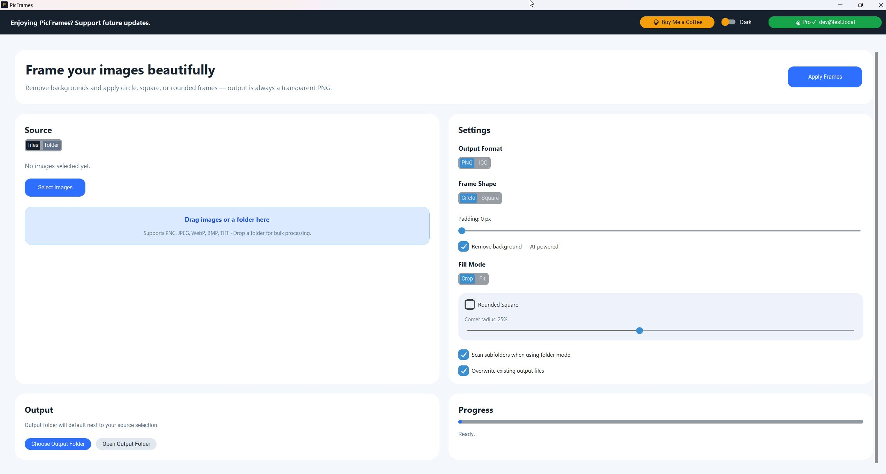

Frame, mask & export images in seconds.
Apply circle, square, or rounded-square masks to any batch of images. AI background removal built in — no cloud, no API keys.

Profile pictures, icons, and thumbnails all need cropping, masking, and background removal. PicFrames does all three in one pass.
Local AI background removal via rembg. No uploads, no subscriptions, no waiting. Just clean exports ready to use.
Everything you need for professional image framing.
Three mask shapes, AI background removal, ICO export, and instant preview — all without leaving the app.
AI Background Removal
Powered by rembg — one click strips backgrounds from every image in your batch using a local AI model. No cloud, no green screen setup.
Three Frame Shapes
Circle, square, and rounded-square masks. Rounded Square is Pro-exclusive with adjustable corner radius from 5–50% — the polished app-icon aesthetic.
ICO Export
Generate multi-size Windows ICO files (16–256 px) for app icons in one run. Pro feature.
Transparent PNG
Crisp transparent PNGs ready for any design workflow, no white box or compression artefacts.
Instant Preview
See the framed result before exporting. Adjust mask shape and radius and re-export in seconds.
Simple. One-time. Yours.
Personal
- check Circle & square frame shapes
- check Transparent PNG export
- check Up to 10 images per batch
- block Personal, non-commercial use only
PicFrames Pro
- bolt Rounded-square shape with adjustable radius
- check AI background removal (rembg, fully offline)
- check ICO export for Windows icons
- check Unlimited batch + commercial license
Mask. Remove. Export. Done.
Use Personal free for basic framing, then upgrade to Pro for AI backgrounds, ICO export, and no batch limits.